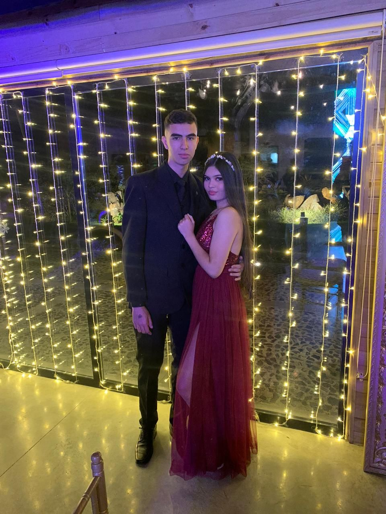

Mi padre, John Jairo Restrepo Fernandez, es la persona la cual me ha apoyado durante toda mi vida, la persona que me ha dado el apoyo mas incondional.Por encima de ser mi padre es mi amigo y mi consejero, es mi ejemplo a seguir y al cual le agradezco por enseñarme este mundo de la tecnologia, por enseñarme desde pequeño lo que es lo bueno y los caminos por lo cual la vida lo puede llevar a uno y como sobrellevarlos.Gracias a el, soy el hombre que soy.

Mi madre, Adriana Patricia Jaramillo, es la persona la cual siempre me ha apoyado en el estudio, la mujer mas fuerte y valiente que conozco. Gracias a ella y a mi abuela he podido estudiar y estar en un colegio y en una universidad tan buena, sin ella no tendria la educacion que tengo hoy en dia, sin ella y sin mi padre no seria el hombre que actualmente soy y en el hombre que me estoy convirtiendo dia a dia.

Mi hermana, Isabella Restrepo Jaramillo, es la niña que llego a mis dias a descontrolarlos, a llenarlos de locuras y de alegrias. Mi hermana es la niña que llego en el momento indicado a alegrar la vida de la familia restrepo.Por ella es que cada dia trato de ser una persona para que ella crezca con un buen ejemplo y siempre orgullosa de mi. Con ella he pasado bastantes momentos y me ha apoyado bastante con mis emociones y siempre me sorprende con sus alegrias y me saca una sonrisa dia tras dia.

Mi abuela, victoria de Jaramillo Londoño, es una de las mujeres mas valiosas que tengo en toda mi vida, es la que me lleva los caprichos, la que me ha apoyado en el estudio junto a mis padres. Ella aparte de ser un apoyo economico es un apoyo gigante para mi emocionalmente, con ella veo novelas todos los dias, me cuenta cosas del pasado de ella y asi como ella es un apoyo para mi, yo lo soy para ella y el que siempre la acomapaña a todos lados donde ella este.
Mi novia, Stephania Zapata Hincapie, esta mujer llego a mi vida hace 5 años, una mujer siendo una total desconocida la vida nos fue poniendo poco a poco en el camino, hace 2 años tengo el orgullo de decir que es mi novia, años de los cuales han sido llenos de felicidad, emociones, tristezas, años llenos de emociones y de los cuales nunca olvidare en mi vida. Esta mujer llego a mi vida a alegrarme mis dias y apoyarme en unos de los momentos mas dificiles que he pasado, le doy gracias a la vida, a Dios o a lo que sea que nos cruzo en el camino, por haberme puesto a esta mujer en el camino.